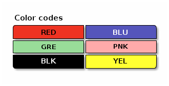

Emacs org-mode examples
Table of Contents
1 It's first export to html test
2 Scientific usage proves that it might be awesome
Installation Guide
Evaluate expression below in scratch buffer to determine where org expects to seeks its libraries by default config:
(expand-file-name "ditaa.jar" (file-name-as-directory (expand-file-name "scripts" (file-name-as-directory (expand-file-name "../contrib" (file-name-directory (org-find-library-dir "org")))))))
/home/antony/.emacs.d/elpa/contrib/scripts/ditaa.jar
- Download, unzip, rename java package and locate it there
- Add
(ditaa . t)into org-babel-load-languages in your .emacs
Test it:
#+BEGIN_SRC ditaa :file img/color_test.png :exports both /----\ /----\ |c33F| |cC02| | | | | \----/ \----/ /----\ /----\ |c1FF| |c1AB| | | | | \----/ \----/ #+END_SRC #+RESULTS: file:img/color_test.png
#+BEGIN_SRC ditaa :file img/second_color_test.png :exports both Color codes /-------------+-------------\ |cRED RED |cBLU BLU | +-------------+-------------+ |cGRE GRE |cPNK PNK | +-------------+-------------+ |cBLK BLK |cYEL YEL | \-------------+-------------/ #+END_SRC #+RESULTS: file:img/second_color_test.png
